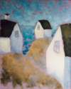
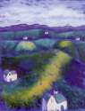
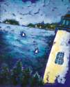

|
"Painting is an attempt to come to terms with life. There are as many solutions as there are human beings." ~ George Tooker "Try to find your deepest issue in every confusion and abide by that." ~ D.H. Lawrence "Only in men's imagination does every truth find an...undeniable existence. Imagination . . . is the supreme master of art, as of life." ~ Joseph Conrad "When power corrupts, poetry cleanses, for art establishes the basic human truths which must serve as the touchstone of our judgement." ~ John F. Kennedy |
View
the Folios
 Folio ISecond Chances for the Undeserving But Still Hopeful  Folio IIShell, Rock, Bone: How to Live in the Undreamed World  Folio IIINavigating the Sea of Longing Translations from the Archives of Exile and Belonging Folio V Narrow Escape from a Life of Bliss Home | About the Artist | About the Paintings | Catalogue |